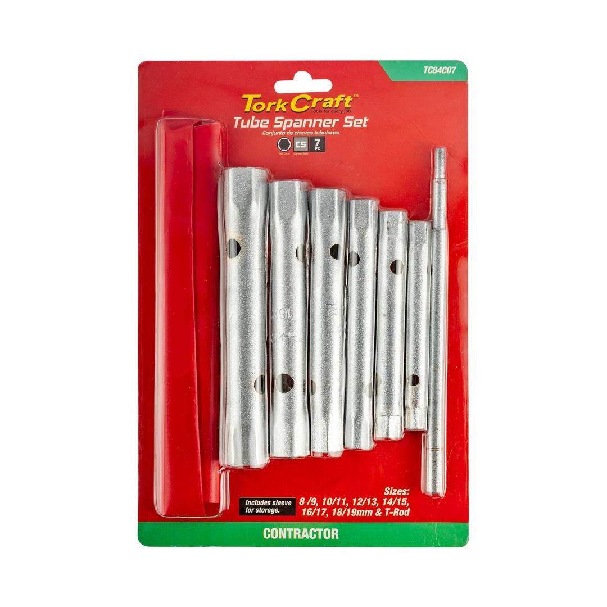

TC84007
221.95

A tubular sheet steel socket set is a collection of socket wrenches made from sheet steel and designed with a tubular shape. These sockets are typically used for accessing and tightening or loosening nuts and bolts in confined spaces or where a standard socket might not fit.